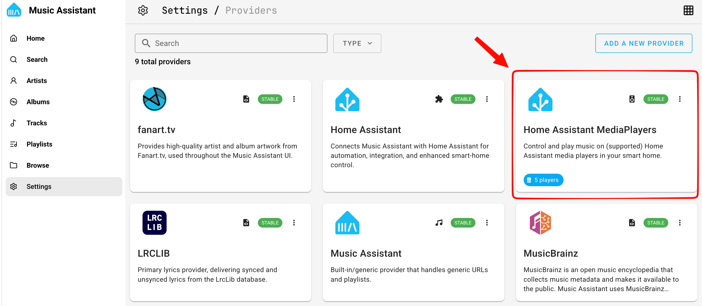
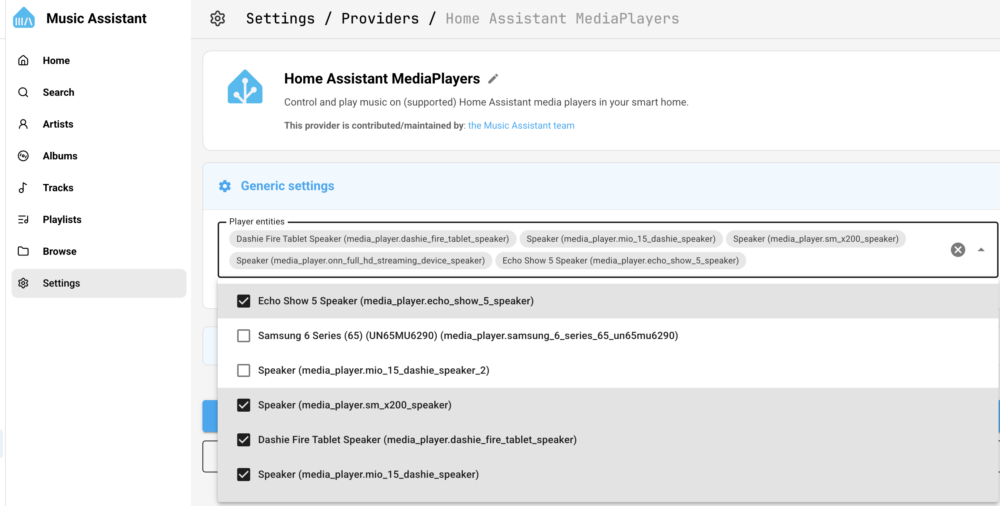

Music Assistant is a free, open-source music library manager for Home Assistant that connects all your music services in one place. With the Dashie Kiosk integration, you can use your Dashie tablets as speakers for Music Assistant - play music, podcasts, and more through any Dashie Kiosk device on your network.
What You'll Be Able to Do
Stream music from Spotify, YouTube Music, local files, and other sources directly to your Dashie Kiosk tablets. Control playback from the Music Assistant UI or Home Assistant automations, and use voice commands to request songs.
Prerequisites
- Home Assistant 2023.5 or later
- Dashie Kiosk installed on your Android device (version 2.21.0B or later)
- The Dashie Home Assistant Integration installed and configured
- HACS installed in Home Assistant
Required: Dashie Integration
This guide requires the Dashie Home Assistant integration to be set up first. The integration exposes your Dashie Kiosk as a MediaPlayer entity in Home Assistant, which Music Assistant uses to stream audio to your tablet. If you haven't set it up yet, follow the Home Assistant Integration guide first.
How It Works
Music Assistant acts as a central hub for all your music sources. It discovers speakers on your network through "Player Providers." The Home Assistant MediaPlayer provider lets Music Assistant see any media_player entity in Home Assistant - including your Dashie Kiosk tablets.
Audio flows from Music Assistant through Home Assistant to your Dashie tablet:
Spotify, YT Music, etc.
HA Add-on
MediaPlayer Entity
Android Tablet
Music Assistant discovers Dashie Kiosk through the Home Assistant MediaPlayer provider and streams audio to it.
Part 1: Install Music Assistant
Music Assistant runs as a Home Assistant add-on. It runs as a separate service managed by Home Assistant.
Add the Music Assistant Repository
In Home Assistant, go to Settings → Add-ons → Add-on Store (bottom right). Click the three-dot menu (⋮) in the top right and select Repositories.
Paste the following URL and click Add:
https://github.com/music-assistant/home-assistant-addon
Install the Add-on
Close the repositories dialog. Refresh the page, then scroll down or search for Music Assistant in the Add-on Store. Click on it, then click Install.
Start the Add-on
After installation completes, click Start. Optionally enable Start on boot and Watchdog so Music Assistant runs automatically.
Set Up the Integration
After starting the add-on, Home Assistant should automatically discover Music Assistant and prompt you to set it up. If not, go to Settings → Devices & Services → Add Integration and search for Music Assistant. Click Configure and follow the prompts.
First-Time Setup
After installing, you can open the Music Assistant UI by clicking Open Web UI on the add-on page, or by finding it in the Home Assistant sidebar. The first launch will walk you through connecting your music services (Spotify, YouTube Music, local files, etc.).
Part 2: Add Your Music Sources
Before adding speakers, connect at least one music source so you have something to play. Open the Music Assistant UI from the Home Assistant sidebar.
Open Settings
In the Music Assistant UI, click the gear icon or go to Settings → Music Providers.
Add a Music Provider
Click Add Music Provider and choose from the available options:
• Spotify - Requires Spotify Premium
• YouTube Music - Free or Premium
• Local Files (Filesystem) - Music files on your HA server
• Radio Browser - Free internet radio stations
• And many more
Authenticate and Sync
Follow the authentication steps for your chosen provider. Once connected, Music Assistant will begin syncing your library. This may take a few minutes depending on the size of your library.
Part 3: Add Dashie Kiosk as a Speaker
Now for the key step - adding your Dashie Kiosk tablet as a speaker in Music Assistant using the Home Assistant MediaPlayer provider.
Open Providers
In the Music Assistant UI, go to Settings → Providers.
Open the Home Assistant MediaPlayer Provider
In the Providers list, click on Home Assistant MediaPlayers to open its settings.

Select Your Tablet as a Player Entity
Under Generic Settings, click the dropdown for Player Entities and select your Dashie Kiosk tablet. Then click Save. Your tablet is now a player in Music Assistant.

Verify Your Dashie Speaker
Go back to the Music Assistant settings and select Players. Your Dashie Kiosk should now be listed as [Device Name] Speaker.
Multiple Dashie Tablets
If you have multiple Dashie Kiosk devices, they'll each appear as separate speakers in Music Assistant.
Part 4: Play Music
With everything connected, you can start playing music on your Dashie Kiosk tablet.
From the Music Assistant UI
Select Your Dashie Speaker
In the Music Assistant UI, click the speaker/player icon at the bottom of the screen. Select your Dashie Kiosk device as the active player.
Browse and Play
Browse your library, search for music, or explore radio stations. Click play on any track, album, or playlist and it will stream to your Dashie Kiosk tablet.
From Home Assistant Automations
You can also trigger music playback through Home Assistant automations and scripts using the Music Assistant services.
# Play a specific playlist on your Dashie tablet
service: mass.play_media
data:
media_id: "My Playlist"
media_type: playlist
entity_id: media_player.dashie_kitchen# Play a radio station
service: mass.play_media
data:
media_id: "BBC Radio 1"
media_type: radio
entity_id: media_player.dashie_kitchenWith Voice Commands
If you have voice control set up on your Dashie Kiosk, you can use voice commands to control music playback through Music Assistant's Home Assistant integration.
Troubleshooting
Dashie Kiosk doesn't appear as a speaker
- Make sure the Dashie Home Assistant integration is installed and your device is online
- Verify your Dashie device has a
media_playerentity in Home Assistant (check Settings → Devices & Services → Dashie) - Ensure the Home Assistant MediaPlayer provider is added and enabled in Music Assistant settings
- Try restarting Music Assistant from the add-on page
Music plays but no sound from the tablet
- Check that the tablet volume is turned up (you can use the
number.dashie_volumeentity in Home Assistant) - Make sure no other app on the tablet has taken audio focus
- Verify the Dashie Kiosk app is in the foreground on the tablet
Playback is choppy or keeps buffering
- Check your WiFi signal strength on the tablet (
sensor.dashie_wifi_signalin HA) - Move the tablet closer to your WiFi access point or consider a mesh network
- Reduce the stream quality in Music Assistant player settings if available
Music Assistant can't connect to music services
- Check that your Home Assistant instance has internet access
- Re-authenticate the music provider in Music Assistant settings
- Check the Music Assistant logs for specific error messages
Need More Help?
If you're still having trouble, contact us with details about your setup. For Music Assistant-specific issues, check the Music Assistant documentation or their Discord community.